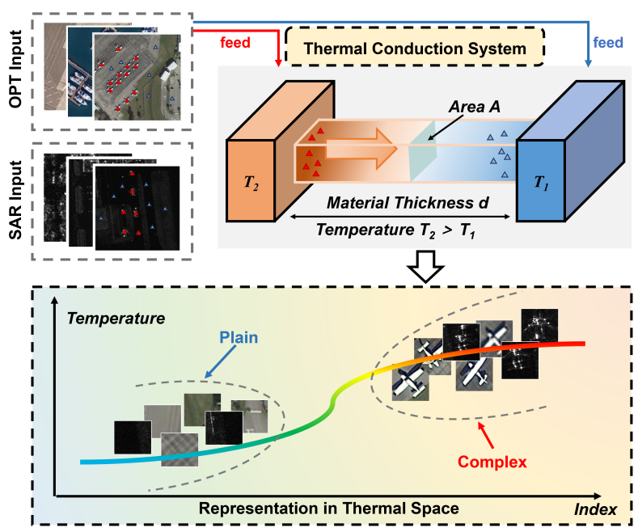
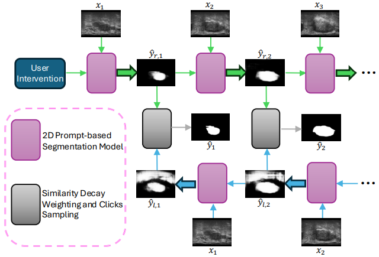

Zhaozhi WangPh.D. studentSchool of Electronic, Electrical and Communication Engineering University of Chinese Academy of Sciences Beijing, China, 101408. Email: wangzhaozhi22@mails.ucas.ac.cn; Github: https://github.com/feufhd; Google Scholar: https://scholar.google.com |

|
Biography
I am a Ph.D. student of LAMP in the School of Electronic, Electrical and Communication Engineering, University of Chinese Academy of Sciences, advised by Prof. Qixiang Ye. I got my B.S. degree in Peking University of Theoretical and Applied Mechanics in June 2019. I got my M.S. degree in Peking University of Computer Application Technology in June 2022, advised by Assoc. Prof. Huizhu Jia and Assoc. Prof. Zongqing Lu.
My research interests include computer vision and representation learning.
Publications
 |
Zhaozhi Wang*, Yue Liu*, Yunjie Tian, Yunfan Liu, Yaowei Wang, Qixiang Ye
Building Vision Models upon Heat Conduction Proceedings of the IEEE/CVF Conference on Computer Vision and Pattern Recognition (CVPR), 2025 [Paper] [Code] |
 |
Zhaozhi Wang, Kefan Su, Jian Zhang, Huizhu Jia, Qixiang Ye, Xiaodong Xie, Zongqing Lu
Multi-Agent Automated Machine Learning Proceedings of the IEEE/CVF Conference on Computer Vision and Pattern Recognition (CVPR), 2023 [Paper] |
 |
Yunjie Tian, Lingxi Xie, Zhaozhi Wang, Longhui Wei, Xiaopeng Zhang, Jianbin Jiao, Yaowei Wang, Qi Tian, Qixiang Ye
Integrally Pre-Trained Transformer Pyramid Networks Proceedings of the IEEE/CVF Conference on Computer Vision and Pattern Recognition (CVPR), 2023 [Paper] [Code] |
 |
Bingyu Xu, Yaowei Wang, Zhaozhi Wang, Huizhu Jia, Zongqing Lu
Hierarchically and Cooperatively Learning Traffic Signal Control Proceedings of the AAAI Conference on Artificial Intelligence (AAAI), 2021 [Paper] [Code] |
 |
Huiyang Hu, Peijin Wang, Hanbo Bi, Boyuan Tong, Zhaozhi Wang, Wenhui Diao, Hao Chang, Yingchao Feng, Ziqi Zhang, Yaowei Wang, Qixiang Ye, Kun Fu, Xian Sun
Minimally User-Guided 3D Micro-Ultrasound Prostate Segmentation Proceedings of the IEEE/CVF International Conference on Computer Vision (ICCV). 2025 [Paper] |
 |
Alex Ling Yu Hung, Kai Zhao, Kaifeng Pang, Qi Miao, Zhaozhi Wang, Wayne Brisbane, Demetri Terzopoulos, Kyunghyun Sung
RS-vHeat: Heat Conduction Guided Efficient Remote Sensing Foundation Model IEEE 22nd International Symposium on Biomedical Imaging (ISBI). 2025 [Paper] |
Awards
Huawei Scholarship, Peking University, 2021.
Master's Specialized Academic Scholarship, Peking University, 2021-2022.
Director's Scholarship, Peng Cheng Laboratory, 2022-2023.
"祖冲之奖"年度重大成果奖（项目核心参与人），空天遥感基础模型关键技术研究与重大应用，2025. [Link]